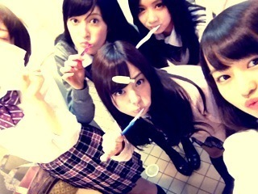
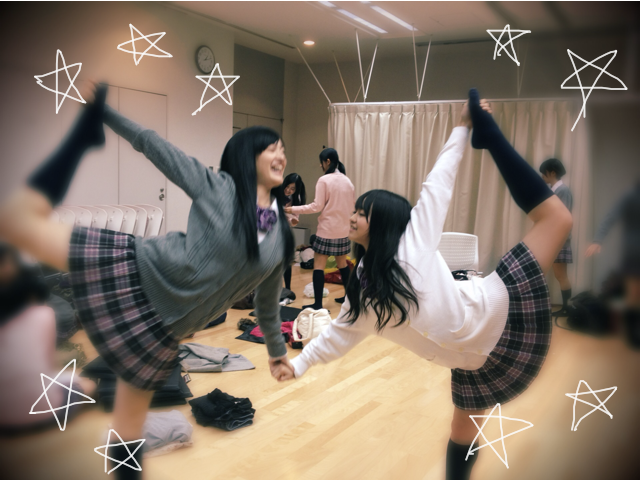
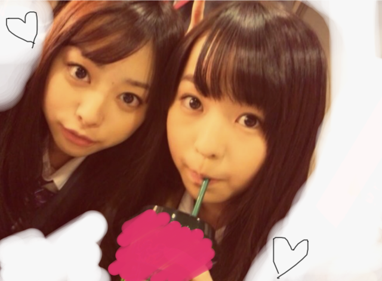
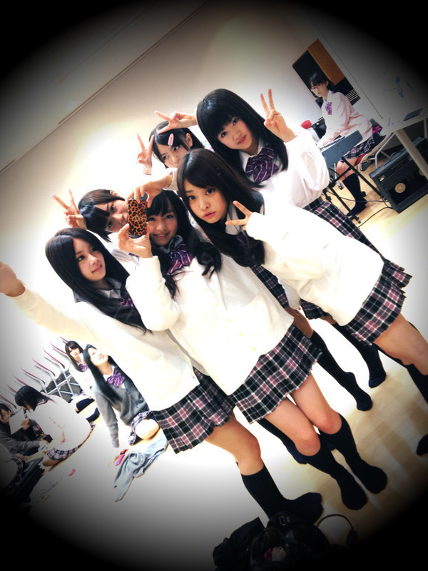
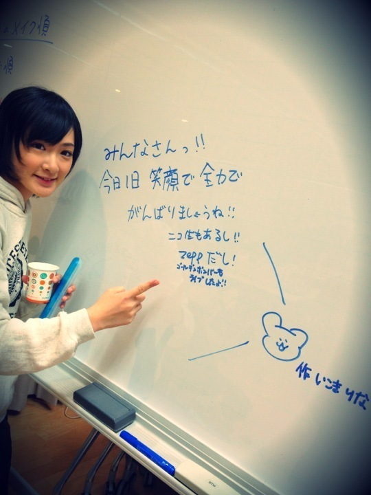

更新久しぶり><;
全然更新できなくてごめんなさい。

だいぶ前の収録のときのしゃしん~!
みんなで歯磨き:D しゃこしゃこ
しゃしんちっさぃ!なんで!!?←←

バレエのポーズとってみた。
せっちゃん笑っちゃってる笑!!
2人で手握ってやったらすぐにくずれたね←
せっちゃんもっかいしゃしん撮ろ-っ♡“
前回は2回連続更新しました!
でもたくさんのコメントありがとうございました＊
みなさんそれぞれの感想をきけてうれしいです。
ニコ生、音でなかったの残念や><
握手のとき、
ベビたん!とかブログ見てるよ!とか
ちょっとの時間なのに
みなさんから直接メッセージいただいて
とても感激でした.......!!!!
覚えてます。
うれしくてぴょんぴょんはねてました♡←
あっ!ハイタッチめっちゃ勢いのって
『いえーい』
とか言ってしまったんですけど...
手、痛かったかな++;?
みなさんのコメントでパワー注入されました!
勉強がんばれるぜっ!!☆
また更新できなかったらごめんね!
ベビたん*****bA by marika
今日は2回更新や~

久しぶりの伊藤ちゃんずや~
ねねころねねころ♪うふふん

まいまい.せいたん.ねね.ちま.あすか
うしろで練習中のいくちゃぁん☆
せっちゃんもまいやんも!!
和やかだった。ほんわほんわ
みなさん本当にありがとうございました***
みんなお疲れ様***
ベビたん*****bA by marika
お疲れ様ですみなさん!!
『乃木坂46コンベンション2011』!!!!!
無事終了しました--------。＊＋
忙しい中来てくださったみなさん
ニコ生を見てくださったみなさん...
本当にありがとうございました!!
いこまちゃんからイベント前に↓

うんうん!がんばらなっ=3☆
いちばん最初メンバー全員で登場する前では
向こう側にみなさんがいるんだ!!と
一気に緊張で上がってしまいました。
こんなに沢山の方が来てくださるとは思いませんでした。
いざ開いたときにみなさんの大きな歓声に
圧倒されて!嬉しくて嬉しくて.....
あのときどんな顔してたんだろうと思います。
緊張で笑顔ひきつってなかったかな?
最後のダンスパフォーマンス。
その中のいちばん最初にバレエを踊ったけど
分からなかったかなぁ...笑
せっちゃんとバレエでコラボできたの嬉しかった~!
せっちゃんありがとう♡
2曲目のダンスはアイドルらしからぬ
クールなダンスを披露しました。
これはれいか.かなりん.せっちゃん.れなりん.ひなちま. 私の
6人で一生懸命練習したダンスです。
合わせる時間も少なかったりしたけど
本当に楽しんで踊ることができました!
いっちばん最後メンバーみんなで踊った
かわいいダンスも楽しかった♪
私ノリノリすぎた笑
やっぱり踊るのだいすき♡
失敗したこと、反省しなきゃいけないことも
沢山あります。
これからの課題も沢山見つかりました。
みなさんのあたたかい声援に感謝しています。
長い間のスタンディングお疲れ様でした。
立って見るのきっと疲れたと思います; ;
そしてスタッフのみなさん、
ご心配ご迷惑をおかけしました。
沢山のスタッフさんに支えられて
今回のイベントを終えることができました!
これからもイベントをしていく中で
ご迷惑をおかけしてしまうこともあると思いますが
よろしくお願いします!!
本当に本当にありがとうございました!!***
みなさんに最高のパフォーマンスをお見せできるように
Lessonで歌.トーク.アイドル.演技.ダンスを
もっと磨こうと思います!
コメントしてくださったみなさん
ありがとうございました!!
質問はまた今度返します*ごめんね。
＊こばやんさん
お誕生日おめでとうございました!!
わぁぁぁ-----; ;
口からお祝いすることができずに
本当にすみませんでした------泣
ほんと私ばかやろうです。
こんな私をいつも応援してくださって
ありがとうございます!!
ますます寒くなりましたね。
はぁってやったら息白い!!←
風邪ひいてる方もいらっしゃるようですね!
心配です...
うがい手洗いとマフラーね!!
また長文失礼しました><
ベビたん*****bA by marika